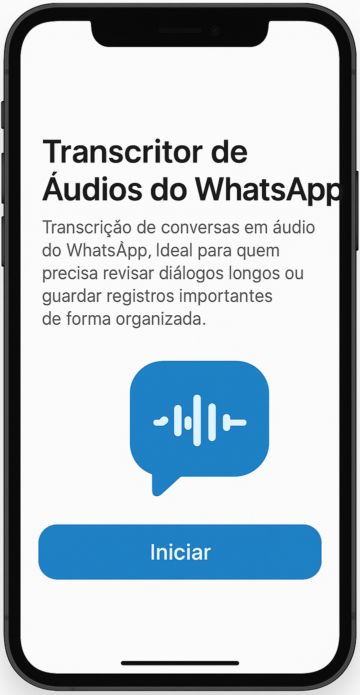

Tecnologia que aproxima pessoas
Criamos soluções digitais acessíveis e humanas.
Conheça nossos aplicativosSobre a Orion
A Orion Data Insights desenvolve softwares e aplicativos sob demanda. Nosso foco é criar ferramentas que facilitem a vida de pessoas com necessidades especiais ou pouco contato com tecnologia.
Nossos Aplicativos
Calendário Afetivo
Ajuda o usuário a lembrar datas importantes com fotos e mensagens personalizadas.
Assistente Pessoal Simples
Auxilia usuários com tarefas diárias usando comandos intuitivos.

Tarefas de Casa
Ajuda o usuário lembrar seus filhos a fazerem as tarefas de casa.
Transcritor de Audios do WhatsApp
Ajuda a revisar diálogos longos ou guardar registros importantes de forma organizada.
